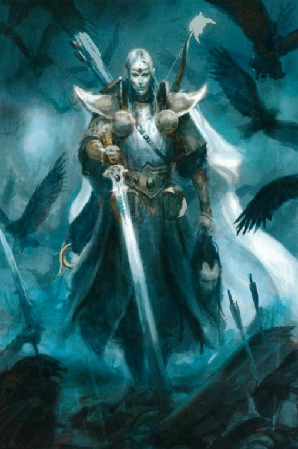
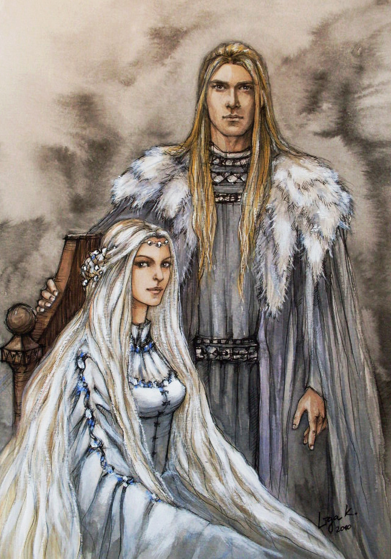
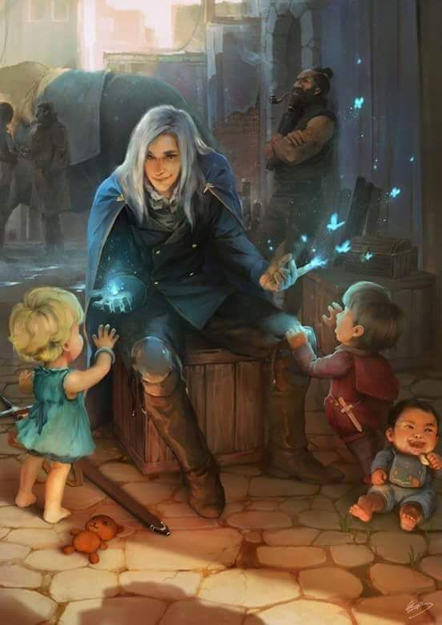
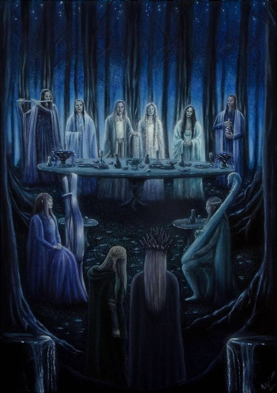
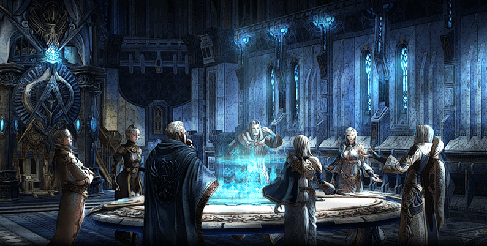
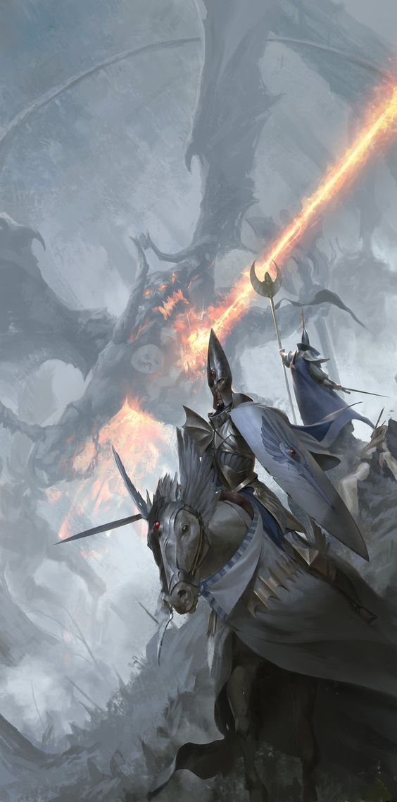

De worldlore
High Elf
| Bijnamen: |
Anypsóste (verhevenen) - Lefká-Dryadales (Witte elven) |
| Officiële talen: |
Dryadales Linguae (Verloren elven taal) - Algemene taal |
| Subraces: |
Xýlo-Dryadales (Wood elves) |
| Lengte: |
1,87M tot 2,35M - Gemiddeld voor volwassene |
| Gewicht: |
75 KG tot 90 KG - Gemiddeld voor volwassene |
De staat
Aerial
| Hoofdstad: |
Aerial (stad) |
| talen: |
Dryadales Linguae (Verloren elven taal) - Algemene taal |
| Religie: |
Pantheon van de grote vier |
| Leiderschap: |
Constitutionele monarchie |
| Huidige leider: |
Phoenix king Aldir’tor Raemainn |
| Locatie: |
Het eiland genaamd “Nisítheón” of ook wel het eiland van de goden |
Eigenschappen:

De Ypsilí-Dryadales zijn van nature erg vijandig naar de andere
rassen op Aegis. Vaak zien de Elves zichzelf als het betere ras. Dit
gaat terug sinds de eerste menselijke kolonisten die de
eeuwenoude Dryadelen steden hebben vernietigd tijdens hun
eerste setteling. Dit heeft er mede voor gezorgd dat de
eeuwenoude Dryadalen rassen uit elkaar zijn gevallen in twee
grote facties. De Ypsilí-Dryadales en de Xýlo-Dryadales. Verder
hebben de Elves een enorme smaak voor wijn ontwikkeld en staan
bekend om de puurste dranken van Aegis te produceren. De
havens van Aerial staan altijd vol met mensen handelaars die
kratten van deze heerlijke wijn willen inkopen. Voor de YpsilíDryadales is wijn niet slechts een drank maar een manier van
leven. De Elves organiseren met regelmaat grote wijnproeffeesten waarin heel Aerial uitloopt om te genieten van de
eeuwenoude traditie van wijn en feest.

Ypsilí-Dryadales (High Elf)
Voor de Ypsilí-Dryadales is er uiteindelijk geen belangrijker ding
in het leven dan het dienen en in eer houden van hun bloedlijn.
De meeste hoogstaande families gaan al vele generaties terug
waarin slechts de puurste families bij elkaar komen om zich voort
te planten. Dit gaat gepaard met een huwelijk. Twee Elves zijn
gebonden met elkaar voor het leven en kunnen ook niet meer
scheiden. De familiegeschiedenis van een ieder staat
gedocumenteerd en het grote archief van Aerial. Voor YpsilíDryadales is het dan ook erg belangrijk om hun bloedlijn zo puur
mogelijk te houden. Het is namelijk niet mogelijk enkele politieke
of militaire invloed te krijgen zonder puur bloed. De onpure
families zijn verbannen uit de hogere districten van Aerial en
mogen slechts deelnemen in productiewerk voor de staat. Arrogantie en trots is wat de
algemene eigenschappen zijn van een Ypsilí-Dryadales gezien deze enorme afkeer naar alles
wat niet rein en puur is in de ogen van de culturele standaard.
Religie staat ook centraal in de Ypsilí-Dryadales cultuur. Het is gebruikelijk voor Elves om te
bidden naar de god(in) die gaat over bepaalde handelingen in het leven. De Ypsilí-Dryadales
geloven in een pantheon van goden die ieder een eigen tak van het leven onder zich hebben.
Uiterlijk:

Ypsilí-Dryadales zijn van nature erg lang. Er zijn gevallen vastgelegd waarin High Elves tot
2,50 meter lang zijn geworden. Dat is echter erg zeldzaam, de gemiddelde High Elf komt
meestal tot maximaal 20 centimeter boven de twee meter als volwaardig volwassene.
Vrouwen zijn vaak iets korter dan mannen.
De huid van de Ypsilí-Dryadales is vaak erg bleek, door
sommige zelfs als wit omschreven. Dit gaat gepaard met wit of
zilver haar. Er is een kleine minderheid van Ypsilí-Dryadales
met zwart haar geregistreerd. De ogen van de Ypsilí-Dryadales
zijn altijd blauw, groen of paars. In een aantal zeldzame
gevallen is zilver ook een kleur die voorkomt. De Elves met
zilveren ogen worden vaak als onrein en een resultaat van
onpuur bloed gezien. Vaak gaat dit gepaard met het zwarte
haar. Er groeit geen haar op het gezicht van de Dryaden. Vele
zien dit als een teken van ultieme reinheid.
De oren van de Ypsilí-Dryadales zijn aanzienlijk langer dan
gemiddeld. Dit is het voornamelijke punt waaraan je de
Dryadalen kan herkennen. De lengte van de oren kan uitlopen van 10 tot 25 centimeter.
Mannen krijgen gemiddeld langere oren dan vrouwen. Vaak is de lengte van de oren gelijk
aan de leeftijd en wijsheid van de Dryadalen.
Talen:

De Ypsilí-Dryadales spreken over het algemeen de algemene taal van Aegis. Deze taal is door de enorme groei in populariteit in Aegis steeds meer opgenomen in de Dryadalen cultuur.
De oude Elven manuscripten in de archieven van Aerial bevatten nog steeds de oude vertalingen van boeken die de oude Dryadalen taal beschrijven.
De eeuwenoude Dryadalen taal werd gesproken voor de menselijke onafhankelijkheid. Na die tijd zijn de meeste oude manuscripten verloren geraakt.
De oude elventaal is daardoor voor jaren verwaarloosd en vergeten. Nu dat de resten van de eeuwenoude taal zijn terug gevonden beginnen de Ypsilí-Dryadales aan een campagne om de oude taal weer
te laten herleven en steeds meer algemene woorden worden opgenomen in de elven taal. De hogepriesters en hun manuscripten zijn volledig in oud Dryadalen geschreven en de toespraken
en zegeningen vanuit de tempel van Aerièlle worden ook uitsluitend in de oude taal uitgesproken.
Geschiedenis:
Heropleving van de geschiedenis

De geschiedenis van de YpsilíDryadales of “High Elves” zoals ze in de algemene taal bekend staan rijkt al vele eeuwen terug. Door de vele nieuwe rassen met een eigen kijk op de wereldgeschiedenis
zijn de vroegste jaren van Aerial verwaterd geraakt. Door de vele opvattingen van de mens en zelfs de broeders en zusters van de Xýlo-Dryadales zijn er vele versies te vinden van de positie van de
kleine eiland natie. De Ypsilí hebben pogingen gedaan om de verwaterde heilige geschriften van Aerial terug te vinden, vele zijn echter verloren gegaan in de “War of the fang”. Tussen de jaren
1260 en 1307 van de mensen kalender hebben de colleges of Magic, de tempelbroeders van Aerièlle en de gilden van de zilversmeden en wijnmakers de handen in één geslagen om de geschiedenis van hun
soort te herstellen.
De colleges of magic gebruikte hun toegang tot de archieven van Aerial om de stukken geschiedenis bij nog over waren van voor de War of the Fang bij elkaar te rapen. Die zijn vervolgens
naar de tempel gebracht en daar hebben de priesters van Aerièlle de stukken bij elkaar gelegd om de geschiedenis van de Ypsilí-Dryadales de herschrijven. Vervolgens werden de stukken gekopieerd en
verspreid over de wereld met hulp van donaties van de gilden van Aerial. De originele geschriften, gekaft met hard leer en versierd met gouden randen werden als heilig verklaard en in de
archieven van Aerial geplaatst waar ze tot op de dag van vandaag nog te bestuderen zijn.
Moeder van alle Dryadalen

In een tijdperk, ver voor het ontstaan van Aegis zoals het nu bekend staat. Voor de steden van de mensen de vlakten beheersten, voor Orc’s de bergen en bossen bewoonde en voor de dwergen
de diepten van Aegis als hun thuis zagen, was er een gezin. Er was de vader Kharash, de moeder Aerièlle, de zoon, Fineall en de dochter, Aestaena. Dit gezin bewoonde de lege vlakten van Aegis.
De vader jaagde op de wezens die de vlakten bewoonde om zijn gezin te voeden. De moeder bereidde de maaltijd om het gezin te voeden. De zoon en dochter zorgde voor de witte paarden
en zilveren phoenixes waar mee gejaagd werd. Na enige tijd brak er een nieuw tijdperk aan. De wezens waar de vader altijd op gejaagd had waren verdwenen. Uitgestorven relikwieën van
een ver verleden. Het gezin leed aan honger. De vader ging niet langer op jacht, de moeder kon niet langer de maaltijd bereiden en de kinderen konden de paarden en phoenixes niet
langer verzorgen. Op de zeventigste dag zonder maaltijd kwamen de moeder en de vader bij elkaar om de toekomst van het gezin te bespreken, want het zou niet lang meer duren tot het einde
daar zou zijn. Het was op die avond dat de moeder met de suggestie kwam om de eindeloze vlaktes te temmen, en er koren en groenten op te verbouwen om te leven. Voor een taak zo groot
waren werkers nodig.
Dit was het moment waarop het gezin samen kwam om de geschikte werker te schapen. Ze zouden worden geschapen in het evenbeeld van het gezin, om zo hun bloedlijn voort te zetten.
Het was op die dag, dat Aerièlle de Dryadalen had geschapen. Lange wezens, geschikt om te werken op de velden en om Aegis te temmen en te bewonen. Zij waren door de moeder verkozen als
het ras wat over ieder ander zou heersen. De vader, heer van de jacht en van de cyclus van het leven, liet bomen groeien en rivieren stromen. Bergen uit de aarde groeien en dieren de velden
bewandelen. De moeder schonk de Dryadalen het leven, vruchtbaarheid en liefde. Man en vrouw, samen om de geschenken van het gezin te delen en om elkaar aan te vullen. Samen om zichzelf voort
te planten en Aegis te bewonen. Samen met de moeder zouden de Dryadalen Aegis bewandelen en bevolken,
de dieren temmen en de bergen beklimmen. Samen zouden ze de vlakten bewandelen en de grote oceaan over steken om nieuwe soorten te ontdekken. De zoon, altijd op zoek naar uitdagingen bracht
gevaren en verleidingen in Aegis voor de Dryadalen om te moeten overwinnen, om zo ooit volledige verlichting te kunnen bereiken. Ziekten en plagen, hebzucht en jaloezie, onreinheden en vervormingen.
Allemaal onderdeel van de testen van de zoon om de Dryadalen te leiden naar verlichting. De dochter, zelf wonderschoon en puur, schonk de Dryadalen schoonheid en lust, Barmhartigheid
en verdraagzaamheid, weerstand en kennis. Dit alles om de Dryadalen te leiden in hun tocht naar verlichting.
Bewandelen van de velden
De Dryadalen bewandelde de velden van Aegis, ze beklommen de bergen en temde de wezens die de wereld bewandelde. In het centrum van de wereld op het eiland genaamd “Nisítheón” of ook wel
het eiland van de goden werd de stad ter ere van de moeder opgericht genaamd “Aerial”. Vernoemd naar de moeder zelf, was dit een stad die bruiste van kennis, literatuur, cultuur en groei.
De witte stenen uit de kern van Aegis vormde het beeld van reinheid. De witte stad Aerial was geboren. Haar hoge torens en blauwe vuren waren een waar aanzicht om mee te maken.
De velden om de stad waren uiterst vruchtbaar en het rivierwater schoon. De moeder en haar kinderen liepen hand in hand.
De zoon zag dat de Dryadalen zich ontwikkelde en ze de velden van Aegis waard waren. Hij besloot daarom dat het tijd was voor de eerste beproeving. Deze moest testen of de Dryadalen
in het oog van verleidingen de paden van de moeder nog zouden blijven volgen. Hij besloot om de vorm aan te nemen van een jonge Dryadalen man. Verleidelijk en atletisch, rein van ziel
maar onrein in uiterlijk. De jonge Dryadalen bezat over zwart haar. Iets wat niet geaccepteerd werd in de Dryadalen samenleving. De zoon trad het huis van de toenmalige phoenix king binnen
en verleidde zijn vrouw “Hatose”. De jonge Dryadalen wilde eerst niet toegeven aan de onreine elf, maar de verleiding werd te veel en ze deelde het bed, en dat was de eerste val van het pad van reinheid.
De kinderen van de nacht
Hatose wist dat ze zwanger was geraakt van de vreemdeling die na die nacht net zo snel weer verdween als dat hij verschenen was. Voor negen maanden lang hield ze vol dat het kind van koning
“Senemin” was. De geboorte was pijnlijk en lang. Na 14 uren werd het kind geboren. Haar zwart als nacht en huid, wit als sneeuw. Het was Senemin duidelijk dat dit niet zijn zoon was.
Het fenomeen van zwart haar was nog nooit eerder voorgekomen in de Dryadalen samenleving. Een ware schande voor het ras. Hatose overleed tijdens de geboorte, en liet daarmee Senemin over met
de zoon van een andere man. Hij besloot om zijn vrouw niet te onteren in de dood en hield het kind en liet het opgroeien als een kind van hemzelf. Hij noemde het kind “Noctis” wat letterlijk
nacht betekend. Gezien dit zijn enige zoon was besloot hij hem voor te bereiden op het bestijgen van de troon. Hij toonde echter weinig interesse in regeren. De eigenschappen die door de
zoon waren geschonken waren in dit opzicht veel sterker aanwezig in de jonge Dryadalen. Hebzucht en een eindeloze honger naar macht en lust hielden hem in zijn greep en dat liet hij zijn
volk ook met regelmaat merken.
Toen hij ouder werd ging hij vaak zonder zijn vader of iemand van het hof de straten van Aerial op. Binnen die stad gebruikte hij zijn macht en schoonheid om vele jonge dames in de stad te verleiden.
Allen baarde ze kinderen met haar zo zwart als dat van Noctis. Een ware versperring op het pad naar reinheid. Deze “kinderen van de nacht” waren een aanzicht die nog nooit eerder waren gezien.
Prins Noctis keerde nacht na nacht terug naar de stad en de zwart harige populatie steeg aanzienlijk.
Het was op dit moment dat de moeder besloot te vertrekken naar nieuwe velden. Ze nam haar zoon en dochter mee. De vader besloot de moeder te volgen in deze beslissing. Het gezin vertrok
met de belofte terug te keren wanneer de velden weer bewandeld konden worden in reinheid. Tot die tijd werden de Dryadalen gestraft voor hun dwalen van het pad van de moeder. De velden verdorde,
de rivieren werden troebel en de Dryadalen waren hun reinheid verloren.
Het tijdperk van de eeuwige nacht
Na het vertrek van het gezin waren de Dryadalen op zichzelf aangewezen. Kort na deze gebeurtenis overleed koning Senemin. De oude Dryadalen had de wandeling met de moeder gedaan en
was klaar om te volgen. Op dat moment liet prins Noctis alle nobele huizen samen komen in het paleis van Aerial. De prins van de gouden kust kwam als eerste aan. Hij droeg een
zijden gewaad met gouden afwerkingen, haar zo wit als sneeuw en ogen zo blauw als de oceaan. Daarna kwamen de priesters van Aerièlle binnen. Allemaal in wit/blauwe gewaden,
een grote gouden staf in hun handen en en zilveren ringen aan hun vingers. Als laatste kwamen de gildemeesters binnen. De wijnmaker droeg een licht blauw zijden gewaad met een
bordouxrode rozenpatroon, en de zilversmid had een wit gewaad met zilveren schouderstukken aan. Het hele pak werd bij elkaar gebouden met dunne lederen riemen. Tegenover hen
stond prins Noctis, haar zo zwart als nacht, ogen diep als de oceaan, en levenloos als een lijk. Hij droeg een lang zwart gewaad met paarse riemen om het bij elkaar te houden.
Naast hem stonden twee jonge dames met lang haar, zijdezacht gekamt en vleugjes geurrijke oliën waren door de lokken gesmeerd. Beiden met zilveren dolken in hun hand en korte gewaden om hun lichaam gebonden.
De zaal was verder gevuld met zwarte wachters, grote mannen die een zilveren hellebaard hadden als wapen. Prins Noctis had de zilveren kroon van zijn vader in zijn rechterhand.
Nadat hij een keer de kamer rond keek kroonde hij zichzelf tot koning en vader van alle elven. De groep elven die zich had verzameld keek toe in angst en durfde weinig tegen de jonge prins in te brengen.
Prins Noctis legaliseerde het bestaan van Dryadalen met zwart haar. Vervolgens moest iedere elf eeuwige loyaliteit zweren aan Noctis. Niemand aanwezig durfde tegen Noctis in te gaan en iedereen zwoer
loyaliteit. Een nieuw tijdperk was begonnen.
De jaren die volgde waren jaren waarin alle leren van de moeder werden verworpen. De kinderen van de nacht plante zich voort en mengde met de reine elven. Gemixte bloedlijnen werden steeds meer de standaard
en voor een moment leek het alsof de elven samenleving voor altijd zou veranderen.
Kolonisatie en de geboorte van magie
De Dryadalen samenleving groeide stevig en Nisítheón was niet langer in staat om de enorm groeiende populatie te onderhouden en steeds meer prinsen besloten om koloniën te stichten op de
velden aan de andere kant van de oceaan. Kleine havensteden en grotere enclaves herrezen aan de kusten van Amoth. Prins Noctis woonde de rest van zijn dagen uit in Aerial. Hij bestudeerde
de krachten die de moeder en vader gebruikte om de wereld te beïnvloeden en leven te scheppen in de woeste vlakten van Aegis.
Om deze onderzoeken uit te kunnen voeren heeft koning Noctis de “College of Magic” opgericht. Deze plek werd ingericht met de hoogste geleerden van de tempel van de moeder. Deze geleerden
zochten naar de antwoorden van de scheppers. De geleerden in de college bestudeerde de leren van licht, duister, schaduw, vuur, leven en amber. De geleerden specialiseerde zichzelf in bepaalde
vormen van magie en lieten nieuwe studenten toe in hun college. De meest geleerde geleerden vormde een council waarmee ze iedere andere student mage konden controleren en bestuderen.
De jaren vlogen voorbij en zelfs het enorm lange leven van Koning Noctis kwam tot een eind. De wereld die hij achter liet was een wereld die was getekend met onreinheden en chaos. Maar ook een wereld vol
met innovatie en ontdekkingen. De dood van Koning Noctis kwam onverwachts toen hij vreedzaam in zijn bed overleed. Zonder vrouw, en zonder legitieme kinderen om hem op te volgen.
De opvolging en de zilveren legioenen
De prinsen en gildemeesters, de tempelpriesters en de geleerden van de college of magic kwamen wederom samen om een nieuwe koning te kronen. Koning Noctis was overleden zonder legitieme troonopvolger. Er moest
een keuze worden gemaakt, de bastaarden, belichamingen van de onreinheid die Aerial doordrenkt, of een nieuwe familie zoeken die de troon een nieuwe kleur kan geven.
Na weken van overleg was er nog steeds geen geschikte kandidaat gevonden. De groep besloot een nieuwe regeringsvorm te omarmen. Een raad was gevormd van de meest invloedrijke Dryadalen in Aerial.
Samen vormde ze de eerste republiek van Aerial. De leden van deze rijke groep waren de twee gildemeesters, de hogepriester van de tempel, de prins van de gouden kust en de nieuwe High Loremaster van
de College of Magic. Aan het hoofd van deze council is de prins van de gouden kust geplaatst. Dit omdat hij de enige bloedlijn is met status hoog genoeg om die titel te dragen binnen Aerial.
De prins aan het hoofd genaamd “Arnorith Raemainn” was een prins met een enorme afkeer naar de koers van Aerial. De onreinheden die de stad doordrenkte en het vertrek van de moeder waren een
enorme klap in het gezicht van de prins. De eerste daad van de prins was dan ook met de steun van de raad om een status systeem te creeëren tussen de elven. De onpure rassen met zwart en gemixt
haar stonden onderaan in deze ladder. Hun onreine bloed was een doorn in het oog van de prins. Deze Dryadalen waren niet langer in staat om een hoge positie binnen het hof van de prins te krijgen
en ze konden ook niet langer trouwen met mensen buiten hun eigen klasse. De familie’s die konden aantonen dat ze van puur bloed waren werden gezegend in de tempen van de moeder en kwamen in de hogere
klassen te leven. Deze groepen konden deel worden van de college of magic en de gilden.
Dit nieuwe systeem was onder degene van onrein bloed niet populair. De prins kondigde de nieuwe wetten aan vanaf de trappen van de tempel. Hij liep naar de spreekstoel in een silveren gewaad,
Een zilveren kroon op zijn hoofd en een gouden ring om zijn vinger. Op zijn linker schouder zat een zilveren jonge phoenix die hij vanaf de vlammende geboorte zelf had opgevoed. In zijn rechter
hand had hij een lange boekrol met de nieuwe wetten geschreven. De hele stad liep uit om deze nieuwe wetten aan te horen. Deze enthousiaste houding werd alleen voor velen een put van woede en afkeer.
Vlak na de aankondiging braken er rellen uit in de stad. De winkels van Aerial werden geplunderd en de zogenoemde pure bloedlijnen werden door de onpuren aangevallen in de straten. Dit kon niet
langen op deze manier doorgaan en prins Arnorith riep de hoge raad bij elkaar om naar een oplossing te zoeken.
De hoge raad was furieus om de machteloosheid van de prins, de gildemeesters dreigde te stoppen met het financieren van de prins als er niet snel een oplossing kwam. De prins riep op dat
iedere pure elf die in staat was een wapen te hanteren naar de college of magic van Aerial kwam. In de toren hadden de magiërs een arsenaal van wapens opgebouwd. De zilversmeden leverde het
zilver en gebruikte de technieken om werktuig te maken om zwaarden, speren en pijlpunten te smeden. De nieuwe opgeworpen zilveren legioenen gingen door de straten en
gingen de relschoppers te lijf en zette iedere onreine die een beetje tegenstand bood de stad uit. Aerial werd ontdaan van onreine Dryadalen en de vrede leek teruggekeerd. De opvolgende jaren
werden gebruikt om de legioenen uit te breiden en ook de koloniën te bemannen. Verder is ook de welbekende witte muur van Aerial gebouwd om de stad voor de rest van haar dagen te beschermen tegen
de onreinheden die haar omsingelen.
Ondanks alle hervormingen van prins Arnorith was er door deze cleansing en nieuwe tak van de samenleving toch weer een tekort aan werkers. De oplossing zou komen vanuit de college of magic.
De opvolging en de zilveren legioenen